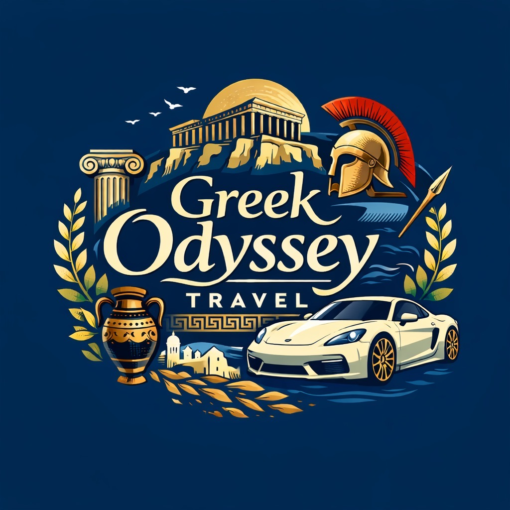
Explore the culture, language, religion, and food of Greece.
Ancient Greece is historically significant as the foundational "cradle of Western civilization," establishing key concepts in democracy, philosophy, science, and art.
Greece is a top-tier travel destination offering a perfect blend of ancient history, stunning Mediterranean islands like Santorini and Mykonos, vibrant culture, and world-renowned cuisine.
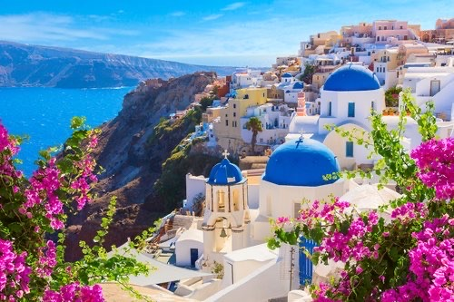
Greece is located in southeastern Europe on the southern tip of the Balkan Peninsula.
Country: Greece
Capital: Athens
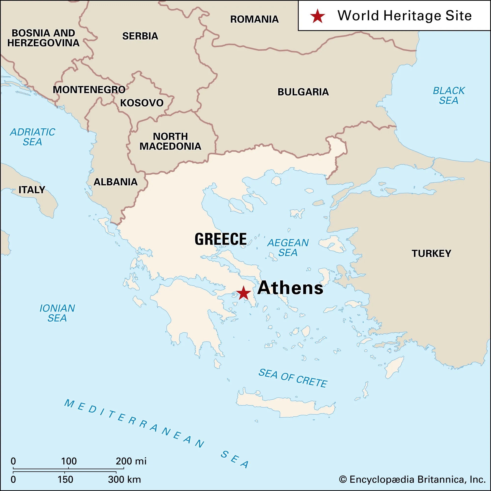
The Acropolis of Athens is a 2,500-year-old ancient citadel located on a rocky outcrop above Athens, Greece.
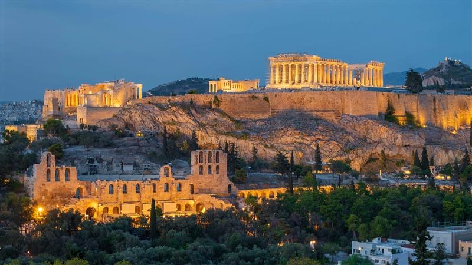
The Parthenon is dedicated to the goddess Athena and considered the pinnacle of Classical Doric architecture.
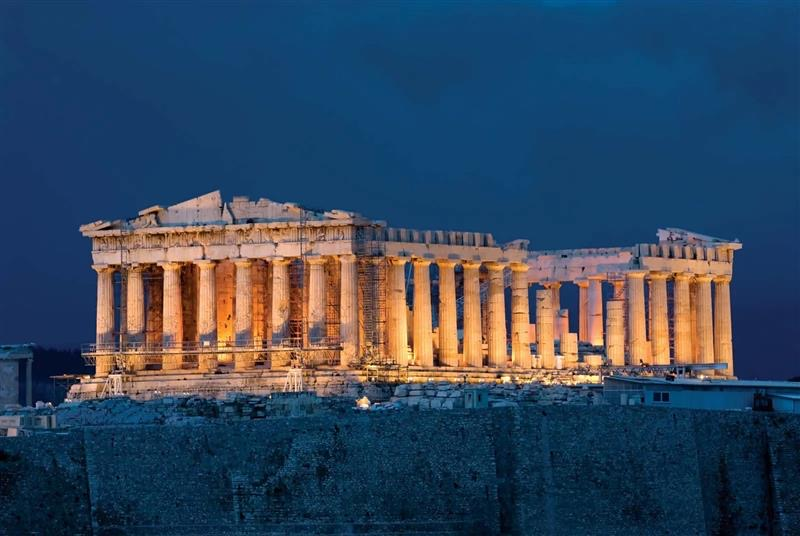
The official language in Greece is Modern Greek. Over 97% of the population speaks it.
Greek belongs to the Hellenic language family.
Greek borrowed words from Latin, Turkish, Italian, and French.
The main religion in Greece is Greek Orthodox Christianity.
Ancient Greek polytheism
Christianity
Islam during Ottoman rule
Greek Easter is the most important celebration.
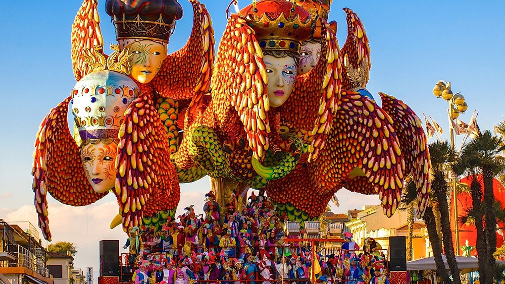
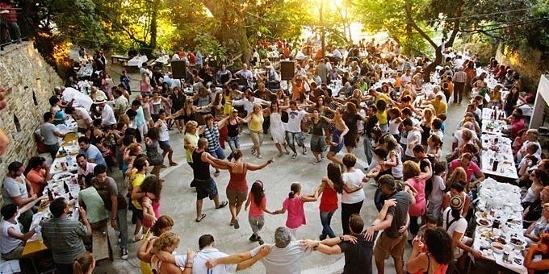
Apokries is a festive carnival.
Panigiria are village feasts.
Many people believe in the Evil Eye.
Greek music is a rich blend of ancient, Byzantine, and Mediterranean influences, featuring distinct genres like Rebetiko, Laiko and traditional folk music often centered around the bouzouki.
Ancient Greek clothing consisted mainly of draped, unstitched garments like the chiton (tunic), peplos (heavy wool garment), and himation (cloak), usually made of linen or wool.
Children are often named after grandparents.
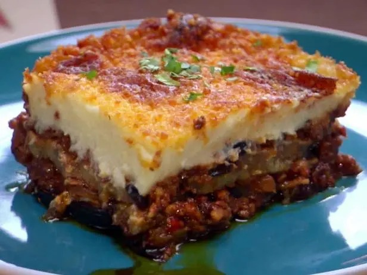
A layered dish with eggplant, minced meat, and béchamel sauce.
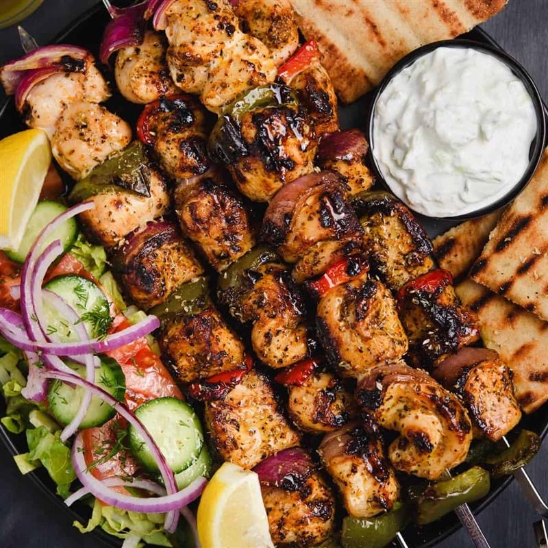
Grilled meat skewers.
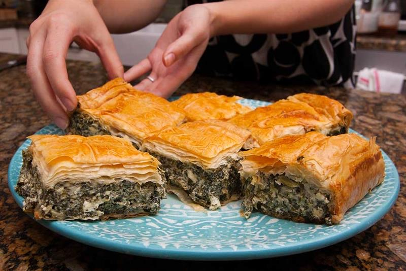
Spinach and feta pie.
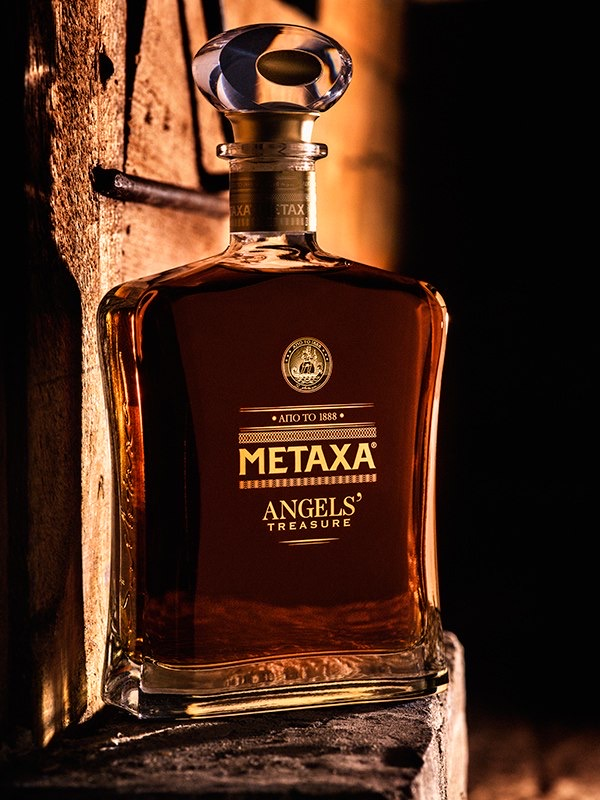
Greek brandy.
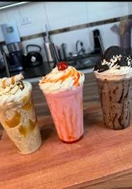
Iced coffee.
Strong grape drink.